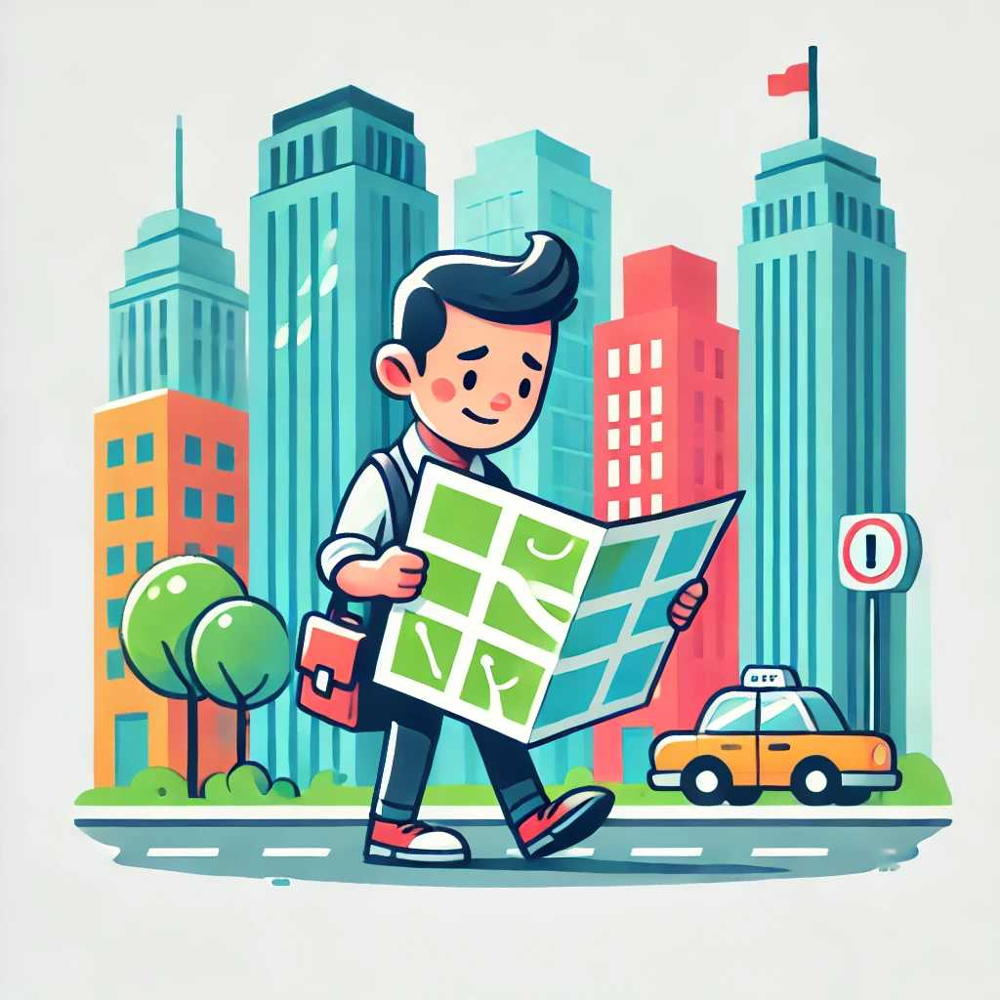

Urban Survival: How to Stay Safe in the City
Surviving in an urban environment presents unique challenges and opportunities. Whether you're dealing with a natural disaster, civil unrest, or other emergencies, these urban survival tips will help you stay safe and secure.
1. Situational Awareness
Being aware of your surroundings is crucial in an urban setting. Stay alert and observe what's happening around you to avoid potential dangers.
Tips for Situational Awareness:
- Keep your head up and avoid distractions.
- Notice exits and escape routes.
- Trust your instincts and avoid suspicious areas.
2. Personal Security
Protecting yourself is a top priority in an urban survival situation. Learn basic self-defense techniques and always be prepared to defend yourself.
Personal Security Measures:
- Carry a self-defense tool like pepper spray or a tactical flashlight.
- Take a self-defense class to learn basic techniques.
- Stay in well-lit, populated areas whenever possible.
3. Emergency Communication
Staying in touch with loved ones and emergency services is vital. Have a plan for communication during emergencies.
Communication Strategies:
- Keep your phone charged and carry a backup power source.
- Memorize important phone numbers.
- Use social media or messaging apps to check in with family and friends.
4. Shelter and Evacuation
Knowing where to find shelter and when to evacuate is critical. Plan ahead and identify safe locations.
Shelter and Evacuation Tips:
- Identify safe places in your home or nearby buildings.
- Have a go-bag packed with essentials in case you need to leave quickly.
- Follow official evacuation orders and routes.
5. Food and Water
Access to clean water and food is essential. Store supplies and know where to find resources in an emergency.
Food and Water Preparation:
- Keep a stockpile of non-perishable food and bottled water.
- Learn about local sources of water and how to purify it.
- Carry a portable water filter or purification tablets.
6. First Aid
Basic first aid skills can save lives. Be prepared to treat injuries and illnesses.
First Aid Essentials:
- Take a first aid and CPR course.
- Keep a well-stocked first aid kit at home and in your go-bag.
- Know how to treat common injuries like cuts, burns, and fractures.
7. Navigation and Transportation
Getting around the city safely is important. Know alternative routes and have multiple transportation options.
Navigation and Transportation Tips:
- Familiarize yourself with local maps and landmarks.
- Use public transportation when available.
- Keep a bicycle or other non-motorized transport as a backup.
8. Financial Preparedness
Having access to money is crucial during emergencies. Prepare financially to ensure you can meet your needs.
Financial Preparedness Strategies:
- Keep cash on hand in small denominations.
- Have a backup credit card or emergency fund.
- Store important financial documents securely.
9. Mental Resilience
Staying calm and focused is key to surviving urban emergencies. Build mental resilience to handle stress and uncertainty.
Building Mental Resilience:
- Practice stress-reduction techniques like deep breathing and meditation.
- Stay informed but avoid information overload.
- Maintain a positive attitude and focus on solutions.
10. Community and Resources
Building a network of trusted friends and neighbors can provide support and resources during emergencies.
Community Building Tips:
- Get to know your neighbors and establish communication.
- Join local emergency preparedness groups or initiatives.
- Share resources and information with your community.
Conclusion
Urban survival requires a combination of awareness, preparation, and adaptability. By following these tips, you can increase your chances of staying safe and secure in the city during any emergency. Always stay vigilant and be prepared for the unexpected.